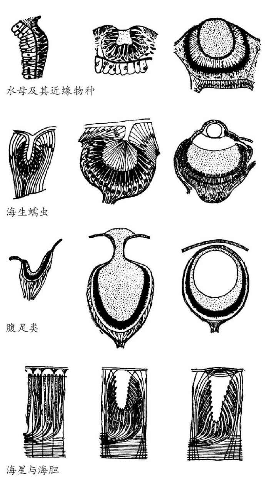
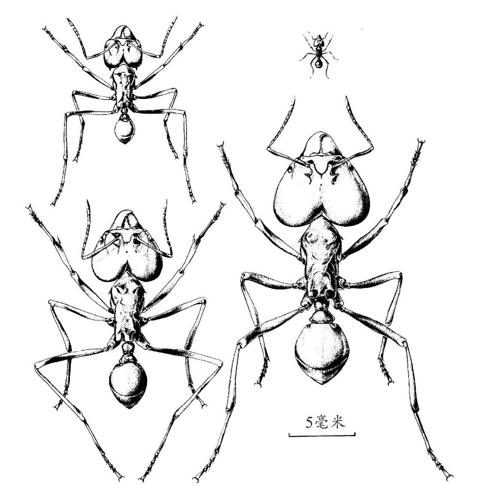

随着进化论变得越来越被人们理解，以及不断被生物学家证实，新的问题出现了。不是所有的问题都已经解决了，争论始终存在于新老问题之中。在本章中，我们将描述一些表面上很难解释的生物现象，其中一些达尔文自己已经解决，剩下的则成为了之后研究的主题。
复杂的适应性是如何进化的？
自然选择进化论的批评者经常提及从蛋白分子到单个细胞再进化到眼睛和大脑等复杂生物结构的困难性。一个只通过自然选择产生的功能齐全且具有良好适应性的生物机器如何能依靠偶然的突变来运行？理解这些何以发生的关键表现在“适应”这个词的另一层含义中。生物体以及它们复杂的结构的进化过程，就像工程师造机器一样，许多方面都是先前结构的修改（适应）版本。在制造复杂的机器和设备时，最初不那么完美的版本随着时间推移不断精炼，增加了（适应）新的甚至是完全想象不到的用途。全膝关节置换术的发展过程就是一个很好的例子：一个粗糙的初始方案足以解决问题，但是被不断改造得越来越好。与在生物进化中类似，按今天的标准来看，许多早期设计的改变看上去很小，但是每一个变化都是在前一个基础上的改进，而且可以被膝外科医生所利用，每一个过程都在复杂的现代人工膝盖的发展中起了作用。
“设计”被不断修改完善的过程就像是在大雾天爬山。即使没有一定要登顶的目的（或者甚至不知道山顶在哪），但只要遵循一个简单的原则——每一步都向上——就会离山顶（至少局部的顶点）越来越近。用某种方式简单地使其中一个构件更好地工作，那么即使没有设计师，整个设计最后也有了改进。在工程上，改进的设计通常是不同工程师对机器改进做多重贡献的结果，最早的汽车设计者看到现代汽车可能会大吃一惊。在自然进化中，改进来自对生物体所谓的“修补”，很小的变化就使这个生物体能更好地生存或繁殖。在一个复杂结构的进化中，许多不同的性状必然是同时进化的，这样结构的不同部分才可以很好地适应一个整体的功能。我们在第五章中看到，相对于主要的进化演变所用的时间，有利的性状，即使它们最初很罕见，也可以在短时间内在种群中扩散。一个已经运作但可以改进的结构体发生连续的小的改变，因此可以产生大的进化演变。在经历数千年后，可以想象到即使一个复杂结构也会发生彻底改变。足够长的时间以后，此结构将在许多不同方面与原始状态相异，于是后代个体可以拥有祖先从未有过的组合性状，就像现代汽车与最早的汽车有很多不同点一样。这不仅是一个理论上的可能性：就像在第五章所描述的，动物和植物育种人经常通过人工选择来实现这一可能。因此我们不难了解到，这些由许多彼此协调的部件所组成的性状是如何由自然选择所引发的。
蛋白质分子的进化有时被认为是一个特别困难的问题。蛋白质结构复杂，每个部位必须相互作用才能正常运转（许多蛋白质必须也和其他蛋白质和分子（有些情形下包括DNA）相互作用）。进化论必须能够解释蛋白质的进化。蛋白质一共有20种不同的氨基酸，因此在一个100个氨基酸长度的蛋白质分子中（比许多实际的蛋白质分子短），正确的氨基酸出现在特定位置的概率是1/20。如果100个氨基酸随机混合在一起，那么序列中每一个位置都有正确的氨基酸、形成一个正常的蛋白质的概率显然非常小。因此有人声称，组装一个发挥功能的蛋白质和用龙卷风吹过废品场来组装一架大型客机的概率差不多。一个发挥功能的蛋白质确实不能通过在序列中每个位置随机挑选一个氨基酸组装而成，但是，就像上文中的解释所阐明的，自然选择不是这样工作的。蛋白质最初可能只是几个氨基酸的短链分子，这样可以使反应快一点，接着在进化中不断得到改进。我们可以忽略数百万不发挥作用的潜在的非功能序列，只要蛋白质序列在进化过程中能比没有蛋白质的时候为反应提供更好的催化作用，然后不断地随着进化时间持续改进。我们很容易在总体上了解到，连续的变化（序列的改变或增长）将如何改进一个蛋白质。
关于蛋白质工作原理的研究成果支持了上述观点。蛋白质中对其化学活动至关重要的部分通常都是序列里非常小的一部分；一个典型的酶只有一部分氨基酸与化学物质发挥作用然后改变这种化学物质，其他蛋白链大部分只是简单地提供支架以支撑参与这个作用的部分的结构。这说明一个蛋白质要发挥功能关键只取决于小部分氨基酸，因此蛋白质序列的一些很小数量的变化就可以进化出一个新的功能。许多实验都证实了这一点，这些实验通过人工诱导蛋白质序列的变化来使它们适应新的功能。我们已经证明，通过这些方式（有时仅仅需要改变一个氨基酸）可以很容易给蛋白质的生物活动带来剧烈的变化，在自然进化的变化中也有类似的例子。
类似的答案也可用以回答连续酶反应的路径如何进化，例如那些产生生物体必需的化学物质的酶（见第三章）。有人可能认为，即使最终产物是有用的，由于进化没有先见之明，无法建立起一个功能完全的连锁酶反应，因此也不可能进化出这些路径。这个谜语的答案是显而易见的。在早期生物的环境中可能存在许多有用的化学物质，随着生命不断进化，这些物质变得稀有了。能够将一种类似化学物质变成有用化学物质的生物体将会受益，于是酶就会进化以催化这些变化。这时有用的化学物质就可以用相关的物质合成，因此一个有前身和产物的短的生物合成路径将会受到青睐。通过这样连续的步骤，从它们的最终产物往后推，就可以进化出能够为生物体提供必需的化学物质的路径。
如果复杂的适应，就像进化生物学家提出的那样，真的是逐步进化的，那么我们应该可以找到这些性状进化的中间阶段的证据。这样的证据的来源有两种：化石记录里中间过程的发现，以及具有介于简单和先进状态之间的过渡特征的现存物种。在第四章，我们描述了连接各迥异形式的中间化石，这些化石支持了进化是逐步改变的理论。当然，在很多时候我们无法找到进化的中间生物，尤其是当我们追溯到更为遥远的年代时。特别是多细胞动物的主要成员，包括软体动物、节肢动物和脊椎动物，几乎全部都突然出现在寒武纪（5亿多年前），而且几乎没有关于它们祖先的化石证据。关于它们之间的关系，最新的DNA研究有力地证明，早在寒武纪之前这些群体就已经是独立的世系（图19），但是我们没有任何关于它们形象的信息，可能是因为它们是软体而不可能变成化石。但是不完全的化石记录并不意味着中间阶段不存在。新的中间阶段的证据正在持续被发现，距今最近的是在中国发现的一块1.25亿年前的哺乳动物化石，它与现代胎盘哺乳动物特征类似，但是比这个物种之前所知的最古老的化石早了4000万年。
另一种类型的证据来源于习性的比较，这是我们研究那些没有变成化石的特征的唯一途径。就像达尔文在《物种起源》一书的第六章中指出的那样，一个简单但令人信服的例子是飞行。没有化石连接着蝙蝠和其他哺乳动物，在沉积物中发现的距今6000多万年的第一批蝙蝠化石，和现代蝙蝠一样有高度改良的四肢。但是有例子证实一些现代哺乳动物具有滑翔能力却不会飞。最为人类所熟悉的是鼯鼠，它们与普通松鼠很相似，除了连接前后肢的翼膜。翼膜就像粗糙的翅膀，可以使鼯鼠荡起来的时候滑行一段距离。在其他哺乳动物——包括所谓的飞狐猴（并不是真正的狐猴，和鼯鼠也无关）——和蜜袋鼯中，相似的滑翔适应性已经独立进化。蜥蜴、蛇和青蛙的滑行物种也是我们所知道的。很容易想象滑行能力可以减少树上生活的动物被捕食者抓到或吃掉的风险，因此在树枝间跳来跳去的动物的身体逐步改变而进化出滑行能力。滑行所用到的皮肤区域逐渐增大，前肢发生改变以适应这种增大，这些都将有利于生存。飞狐猴有一张大得可以从头部延伸到尾巴的膜，尽管只能滑行不能飞，但和蝙蝠的翅膀很相似。一旦可以高效滑行的翅膀结构进化形成，翅膀肌肉组织发育并产生动力就不难设想了。
作为另一个复杂适应的例证，达尔文也研究过眼睛的进化。脊椎动物的眼睛是一个高度复杂的结构，在视网膜上有感光细胞，透明的角膜和晶状体使得图像可以在视网膜上聚焦，还有可以调整焦距的肌肉。所有脊椎动物的眼睛构造都基本相同，但是在细节上有许多变化以适应不同的生活模式。没有视网膜，晶状体似乎毫无作用，反之亦然，那么这样一种复杂的器官是怎么进化出来的？答案是没有晶状体时视网膜绝不是无用的。许多种无脊椎动物都拥有不含晶状体的简单的眼睛，这些动物不需要看得清楚，眼睛可以感知明暗进而察觉捕食者就足够了。事实上，在不同的动物中可以看到简单的感光受体和各种类型可以产生图像的复杂装置之间的一系列中间形态（图20）。甚至单细胞真核生物，也能通过由一群光敏蛋白视紫红质分子组成的受体感知并回应光。所有动物的眼睛中都含有视紫红质，在细菌中也能发现。从细胞的这种可以感知光的简单能力开始，不难想象聚光能力将逐步进化提高，最终成为一个可以聚焦并产生清晰图像的晶状体。正如达尔文所说：
我们为什么会衰老？
作为一个整体，年轻的身体令人惊叹，就像眼睛，是近乎完美的生物机械。但这种“近乎完美”有一个反面的问题，就是它们在生命中持续的时间不长。为什么进化会允许衰老发生？近乎完美的生物由于衰老而变成自己微弱的影子是诗人们钟爱的主题，尤其是当他们预见这些将发生在爱人身上：

图20 各种无脊椎动物的眼睛。从左至右，每一行展示着给定的类别中不同物种由低到高的眼睛类型。例如海生蠕虫（第二行），左边的眼睛只由一些光敏和色素细胞组成，有一个透明的圆锥体投射到它们中间。中间的眼睛有一个充满了透明的胶状物的腔体和有大量感光细胞的视网膜。右边的眼睛在腔体前有一个球面透镜和更多的光受体。
——莎士比亚的“十四行诗12”
衰老当然不局限于人类，在几乎所有的植物或动物中都可以观察到。为了测定衰老程度，我们可以研究许多置于保护区域中的个体，也就是排除“外部”原因比如捕食造成的死亡的环境，这样生物可以比在自然环境中所活的时间长很多。一直追踪下去，我们可以测定不同年龄段的死亡率。即使在被保护的环境中，刚出生的个体的死亡率通常也较高；随着个体长大，死亡率会下降，但成年期之后再次上升。在大多数得到细致研究的物种中，成年个体的死亡率随着年龄的增长而稳步上升。然而不同物种的死亡率的模式差别较大。相比人类这样个体大且寿命长的物种，个体小且寿命短的生物，例如老鼠，在相对年轻时的死亡率高得多。
衰老导致死亡率的上升，这是生物体的多项功能随着年龄增加而退化的结果：似乎所有的东西都在变糟，从肌肉力量到精神能力。在多细胞生物中几乎普遍发生的老化（这看似一种退化）与自然选择导致适应性进化的观点矛盾，这可能看上去是进化论的一个严峻的困境。一种回答是适应性绝不是完美的。在生物体生存所必需的系统中，长期以来累积的损害将不可避免地避免衰老，而自然选择可能根本无法阻止它发生。实际上，复杂的机器例如汽车的年均故障次数，也会随着时间增加而增加，这与生物体的死亡率非常类似。
但这不可能是答案的全部。单细胞生物体例如细菌简单地通过分裂生成子细胞来繁殖，通过这些分裂产生细胞谱系已经持续了数十亿年。它们不衰老，但是持续分解已损坏的组分并用新的替换掉。它们可以无限繁殖下去，前提是自然选择清除了有害的突变。对一些生物（例如果蝇）人工培养的细胞而言，这也是可能的。多细胞生物的生殖细胞谱系也可以在每一代延续，所以为什么整个生物体不会维持修复过程？为什么我们大部分的身体系统显示出某种衰老？例如，哺乳动物的牙齿随着年龄增长而磨损，最终导致饿死在自然界。这不是必然的，爬行动物的牙齿可以不断更新。不同物种的不同衰老速度展示了不同效果的修复过程和随着年龄增长的保持程度：一只老鼠最多能活3年，然而一个人可以活超过80年。这些物种差异表明衰老过程也是进化的，因此衰老需要一个进化论的解释。
在第五章中，我们看到对多细胞生物的自然选择通过个体对后代贡献的差异发挥作用，包括它们产生的后代的数量以及生存机会的差异。此外，所有个体都有事故、疾病和捕食导致死亡的风险。即便这些死因发生的概率与年龄无关，生存几率也随着年龄的增加而下降，我们和汽车都是这样：如果从第一年到下一年良好运转的概率是90%，5年后这个概率是60%，但是50年后就只有0.5%。因此对生存和繁殖的自然选择倾向于在生命的早期而不是晚期进行，仅仅因为平均来看更多的个体能够活着感受其有益的效果。事故、疾病和捕食造成的死亡率越高，自然选择将越强烈地倾向于生命早期的改进，因为如果这些外部原因造成的死亡率很高，那么很少有个体可以存活到老年。
这个观点表明衰老进化是由于与后期的变异相比，在生命早期有更多的有利于生存或繁殖的备选变异。这个概念类似于我们熟悉的人寿保险：如果你年轻，那么购买一定数量的保险将花费少，因为你可能有许多年是提前支付。自然选择引起衰老的作用途径主要有两种。上面提到的观点表明，有害的突变如果发生在生命早期，将遭受最强烈的抵抗。选择能引起衰老的第一种方法是保持种群中很少发生早期突变，同时允许在生命晚期发生变得普遍。许多常见的人类基因疾病确实是由那些在晚年出现有害作用的突变导致的，例如阿尔兹海默症。第二种途径是，在生命早期带来有利影响的变异体比只在晚期带来有利影响的更有可能在整个种群中扩散。生命早期的改进可以进化，即使这些好处是以之后有害的副作用为代价。例如，年轻时高水平的生殖激素可以提高妇女的生育能力，但是之后却有患乳腺癌和卵巢癌的风险。实验结果证实了这些预测。例如，通过只用非常老的个体来繁殖，可以保持黑腹果蝇的种群。在几代之后，这些种群进化出更慢的老龄化，但代价是生命早期的生殖成功率降低了。
衰老的进化理论预测，外因死亡率较低的物种应该比更高的物种衰老得慢并且寿命更长。躯体大小和衰老速度之间确实有很强的联系，躯体较小的动物比大的衰老得快得多，而且生殖时间要早。这可能是由于许多小动物更容易遭受意外事故伤害或被捕食。当我们考虑到被捕食的风险时，具有相似尺寸但野外死亡率不同的动物所具有的迥异的衰老速度往往就容易理解。许多飞行生物以长寿著称是有道理的，因为飞行是对捕食者很好的防御。一个相当小的生物，例如鹦鹉，可以比一个人的寿命更长。蝙蝠与同等体重的陆生哺乳动物例如老鼠相比，寿命要长得多。
我们人类自己也可能是进化学中老化速度较慢的一个例证。我们的近亲黑猩猩即使在人工饲养环境下也很少有活过50年的，并且比人类更早地繁殖，平均生殖年龄为11岁。因此，从人类和猿偏离我们共同的祖先开始，人类可能大幅降低了老化速度并推迟生殖成熟期。这些改变可能是由于提升的智力和合作能力，它们减少了外部死亡原因的威胁和早期生育的优势。早期和晚期生育相对优势的改变可以在当今社会中发现甚至量化。人口普查数据明确表明，工业化导致成年人的死亡率急剧下降，这改变了自然选择对人类老化过程的影响。不妨考虑一下由罕见的基因突变引起的亨廷顿氏病（退化的大脑失调），这种病发病较晚（在30岁或者更晚）。在由于疾病和营养不良而死亡率较高的人群中，很少有个体能活到40岁，亨廷顿氏病患者的后代数量比其他人平均只略少（少9%）。在工业化社会，死亡率很低，人们经常在这种疾病可能发生的年龄才有小孩，结果患病者比不患病者平均少了15%的后代。如果目前的状况持续，自然选择会逐步降低在育龄后期起作用的突变基因的出现频率，老年人的生存率将会提高。罕见但影响重大的基因，例如亨廷顿氏病，对人群整体的影响较小，但是其他许多部分由基因控制的疾病对中老年人的影响很大，包括心脏病和癌症。我们可能希望这些基因的发生率因为这种自然选择而随着时间下降。如果工业化社会中低死亡率的特点持续几个世纪（一个大胆的假设），那么将会出现缓慢但是稳定的基因改变，降低衰老速率。
不育的社会性昆虫的进化
进化论的另一个问题是许多类型的社会性动物中存在的不育个体。在社会性的黄蜂、蜜蜂和蚂蚁中，巢穴中有一些不生殖的雌性个体，即工蚁或工蜂。生殖的雌性是群体中的极少数（通常只有一个蚁后或蜂后）；雌性工蚁或工蜂照看蚁后或蜂后的后代并维护和建造巢穴。另一种主要类型的社会性昆虫——白蚁，雄性和雌性都可以成为工蚁。在高级的社会性昆虫中，通常有几种不同的“阶级”，它们扮演不同的角色，通过行为、大小和身体结构的不同来区分（图21）。

图21 来自同一个群体的切叶蚁属的工蚁阶级。右上角最小的工蚁负责照看切叶蚁耕作的真菌花园，大的则是负责保卫蚁巢的兵蚁。
一个了不起的新发现是，社会性巢居哺乳动物中的几个物种与这些昆虫有类似的社会结构，巢穴中大部分的居住者是不育的。最为人熟知的是裸鼢鼠，非洲南部沙漠地区的一种穴居啮齿类动物。巢穴中可能居住着几十个成员，但是只有一个生殖的雌性，如果她死了，其他的雌性通过战斗决出胜利者来取代她。拥有不育劳作成员的社会性动物的系统因此进化成完全不同的动物种群。这些物种给自然选择理论带来一个显而易见的问题：为什么会进化出失去生殖能力的个体？既然劳作成员自己不生育，因此无法直接接受自然选择，那么它们对分工中的专业角色的极端适应是如何进化来的？
达尔文在《物种起源》一书中提及了这些问题，而且回答了部分。答案就是：社会性动物的成员通常都是近亲，例如裸鼢鼠或者蚂蚁，经常共有同一个母亲和父亲。基因变异体导致某携带者放弃自己的繁殖机会而养育它的亲属，这可能有助于将近亲的基因传递给下一代，近亲的基因通常（由于亲缘关系）与施助个体的基因相同（对于一对姐弟或兄妹，如果其中一个从父母那里遗传了一个基因变异体，那么另外一个也有此变异体的概率是50%）。如果不能生育的个体的这种牺牲导致成功生存和繁殖的近亲数目增加，那么这种“劳作基因副本”数目的增加可以超过由于它们自身不能繁殖而导致的数目减少。关系越近，弥补损失所需的量将越少。J.B.S.霍尔丹曾经说过：“为了两位兄弟或八位表亲我愿献出我的生命。”
亲缘选择理论为理解社会性动物中不育的起源提供了架构，现代研究表明它可以解释动物社会的许多细节，包括那些不像不育昆虫阶级那么极端的特征。例如，在一些鸟类中，幼年雄性没有试图去交配，而是当年幼的兄弟姐妹需要照顾时，在它们父母的巢中扮演着帮手的角色。与之类似，豺狗会在其他成员外出捕猎时照顾年幼的个体。
昆虫不育劳作阶级内部的差异是如何出现的，这个问题与上面所提到的问题略有不同，但是它的答案与上文有一定相关性。特定劳作者的发育受环境信号的控制，例如一个幼虫所得到的食物的数量和质量。然而，对这些环境信号的反应能力却是基因决定的。一个特定的基因变异体可能让蚂蚁中一个不育成员发展成（比如说）兵蚁（下颚比平常的工蚁大）而不是工蚁。如果有兵蚁的群体可以更好地抵御敌人，并且带有这种变异体的群体平均可以繁殖更多，那么这个变异体将提高群体的成功率。如果群体中繁殖活跃的成员是工蚁的近亲，这个引起一些工蚁变成兵蚁的基因变异体将通过蚁后和雄性建立新的群体而传播开来。自然选择因此可以提高这个变异体在该物种的群体中出现的概率。
这些观点同样解释了从单细胞祖先到多细胞生物的进化过程。卵子和精子结合而产生的细胞相互间保持联系，其中大部分丧失了成为生殖细胞和直接为下一代贡献的能力。由于所有相关细胞的基因都是相同的，与另一边的单细胞生物相比，充分提高一部分相关细胞群的生存和繁殖能力将是有利的。非生殖细胞为了整体细胞的利益而“牺牲”了自己的繁殖，有些在发育过程中随着组织的形成和溶解注定要死亡，大部分细胞失去了分裂的潜能，就像我们在讨论衰老的进化时解释的那样。当细胞无视器官的需求而恢复分裂能力时，给生物体造成的严重后果表现为癌症。细胞在发育过程中分化成不同的类型类似于社会性昆虫分化成不同的等级。
活细胞的起源与人类意识的起源
进化论中，在生命发展史的两个极端上，存在另外两个重要但是很大程度上未解决的问题：活细胞基本特征的起源和人类意识的起源。与我们刚讨论的问题相比，它们是生命史上独特的事件。它们的独特性意味着我们不能利用对现存物种的比较来可靠地推论他们是如何发生的。此外，关于生命极早期历史和人类行为的化石记录的缺失，意味着我们没有关于进化事件发生次序的直接信息。这当然不能阻止我们猜测这些可能是什么，但是这样的猜测不能用我们已描述过的其他进化问题的解决方法来检验。
对于生命的起源，大部分当前研究的目的是找到类似于地球早期普遍条件的情形，这种条件允许能够自我复制的分子的纯化学聚合，正如我们细胞中的DNA在细胞分裂时的自我复制。这种自我复制的分子一旦形成，不难想象不同类型的分子之间的竞争将进化出能更精确和更快速复制的分子，这就是自然选择作用对它们的改进。通过将简单分子的溶液（早期地球上的海洋可能的存在形态）置于电火花和紫外线下照射，化学家们成功地合成了组成生命的基本化学成分（糖、脂肪、氨基酸以及DNA和RNA成分）。不过这些成分如何组装成类似RNA或DNA的复杂分子，这方面研究进展很有限，而如何使这样的分子自我复制方面的研究进展则更有限，所以我们还远未达到预期的目标（但一直在持续进步）。进一步来说，一旦这个目标实现了，还有一个问题必须解决：如何进化出一个原始的基因编码，使短链RNA或DNA序列能够决定一个简单的蛋白质链。虽然已经有许多的想法，但是至今仍没有能解决问题的明确方法。
类似地，对于人类意识的进化我们也只能猜测。我们甚至很难清晰地表述这个问题的本质，因为众所周知意识是很难准确定义的。大部分人认为刚出生的婴儿没有意识，但很少有人质疑一个两岁的小孩是有意识的。动物在多大程度上有意识也存在激烈的争论，但是喜爱宠物者清楚地认识到狗和猫对主人的意愿和情绪的反应能力。宠物甚至似乎可以操纵主人去做它们意愿中的事情。因此意识可能是一个程度问题，而不是本质，因此原则上很容易想象我们祖先在进化过程中逐步强化自我意识和沟通能力。一些人会认为语言能力是拥有真正意识的最有力的判断准则，即使这种能力在婴儿时以惊人的速度逐步发展。进一步来说，有明显的迹象表明动物具有基本的语言能力，例如鹦鹉和黑猩猩，它们可以通过学习交流简单的信息。我们人类与其他高等动物之间实际上的差距没有表面上那么明显。
虽然对于那些推动了人类心理与语言能力（显然远超过其他任何动物）进化的选择性力量的细节，我们一无所知，但是从进化的角度来解释它们却没有任何特别的神秘之处。生物学家在认识大脑的功能方面正取得飞速的进展，毫无疑问心理活动的所有形式都可以用大脑中神经细胞的活动来解释。这些活动一定受到具体调控大脑发育和运转的基因的控制；像其他的基因一样，这些基因也很容易突变，引起自然选择可以发挥作用的变异。某些基因的突变导致其携带者说话语法方面存在缺陷，于是人们能够识别出与语法控制相关的基因，这一技术已不再是纯粹的假想。如今，我们甚至已经弄清引起相关差异的DNA序列中的突变。